Arhaderesse · 1888
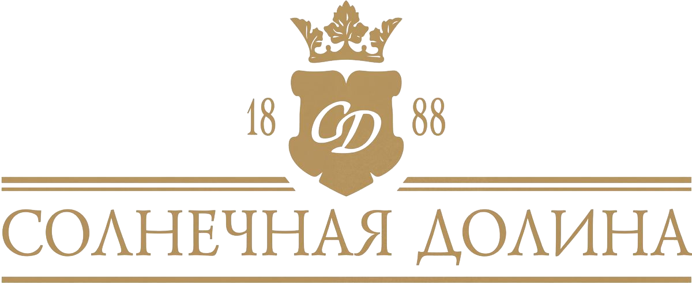
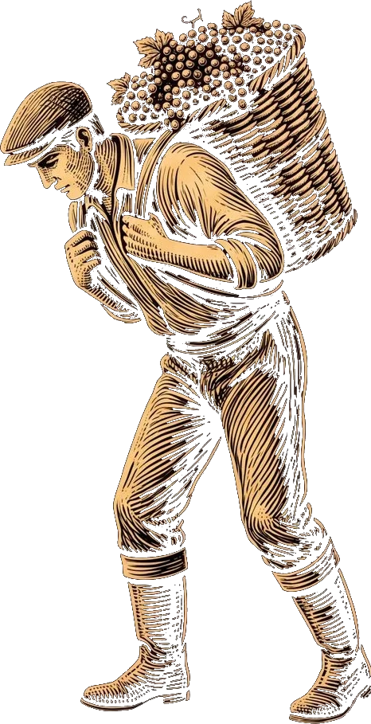
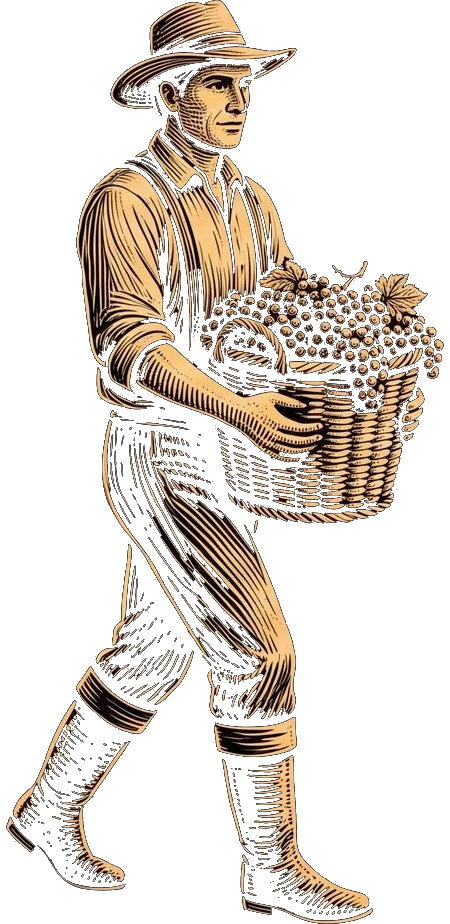
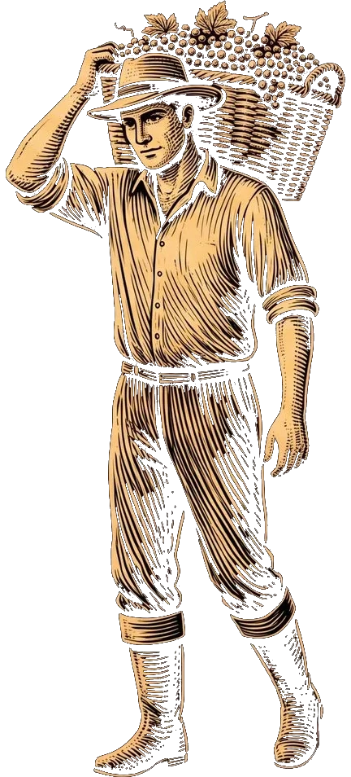
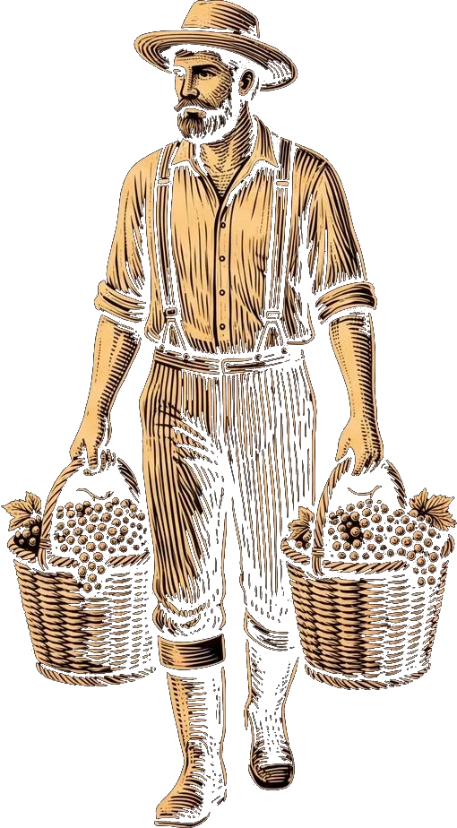
The Arhaderesse Estate · Sudak · since 1888
The manor from the engraving on the house's labels is real. Beneath it lie the cellars, built out into the ravines under Prince Golitsyn. Scroll: evening settles over the estate.
Scroll — evening settles over the estate
What stood here
The turreted manor you see on the label stood above the first vineyards. Beneath it lie the cellars, built out into the ravines: deep ravines were chosen, their floors cleared, upper levels added on. +14 °C year-round, 138 years without a break. "Black Doctor," "Black Colonel," and the house's other reserve wines still age here today.
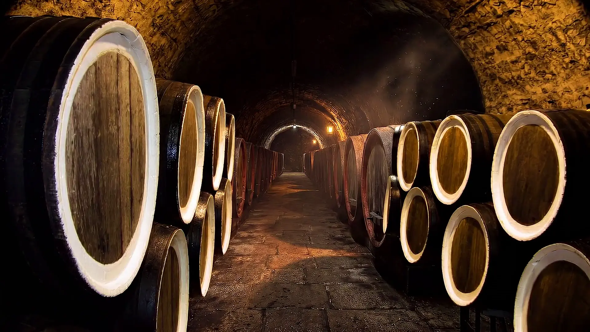
The wine on this label
The label shows this very Arhaderesse estate, in whose cellars this wine ages. The door you just walked through leads here.
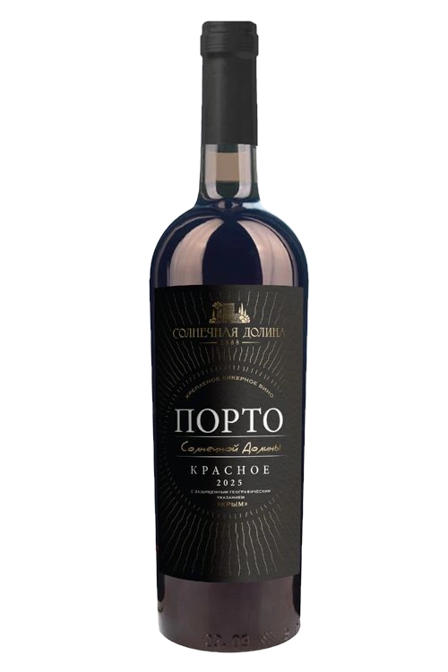
The four worlds of our labels
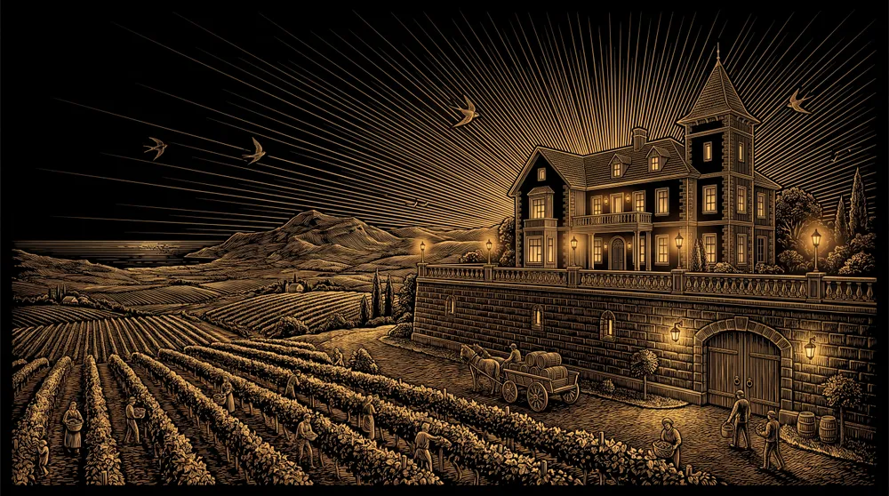
Sun ValleyArhaderesse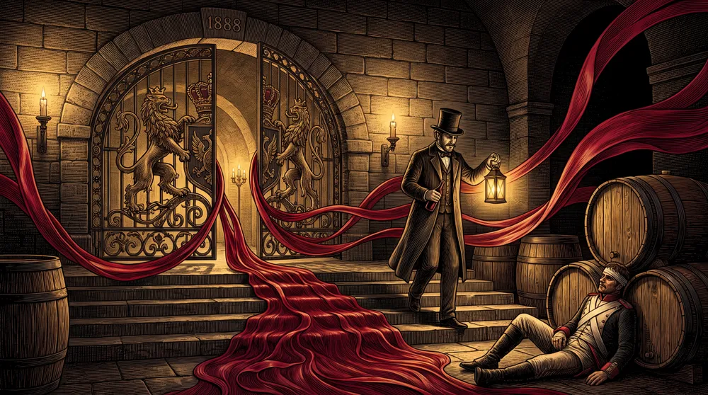
Black DoctorEkim Kara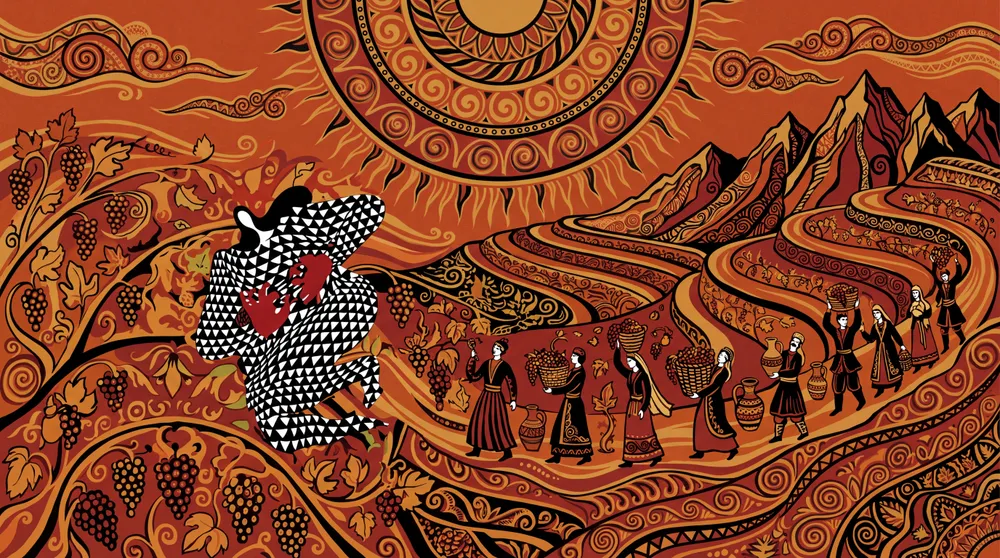
ToklukThe beast walks the tract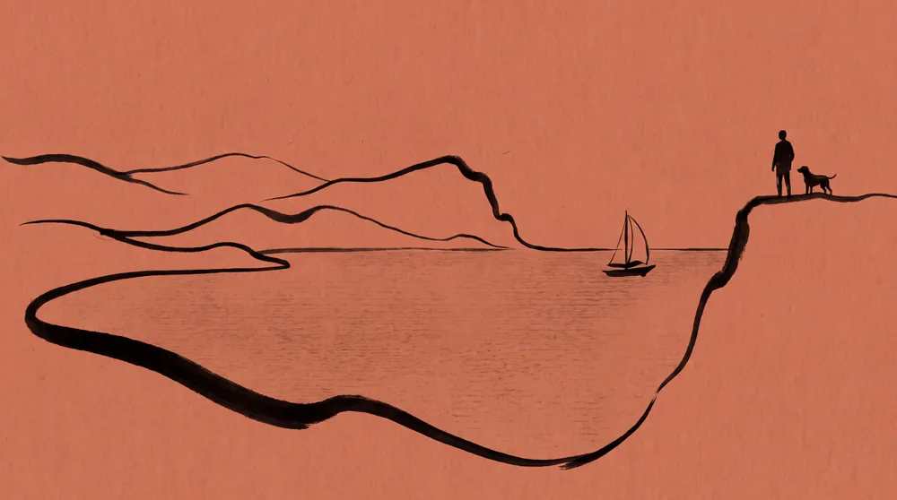
MeganomOne line of ink